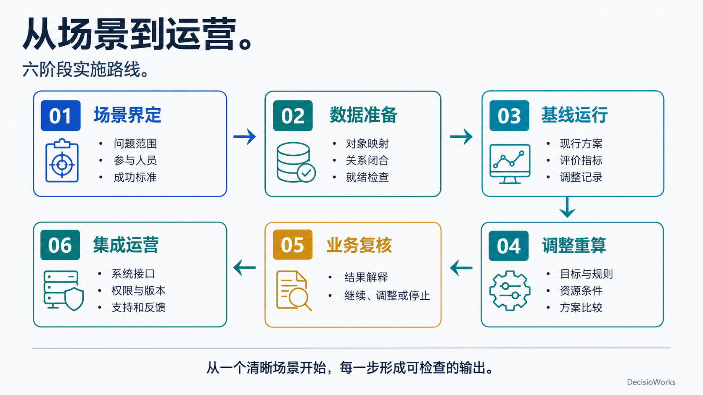

已有系统怎样与工具包协作？
| 环节 | 具体工作 | 形成的交接物 |
|---|---|---|
| ERP / MES / 文件与现场数据 | 确认来源、负责人、单位、时间与对象标识 | 字段清单与样例数据 |
| 标准化数据接口 | 映射订单、工艺、资源等对象并校验关系 | 可计算的数据集与诊断记录 |
| DecisioCore + GOCK | 组织目标、规则和执行流程，生成并分析方案 | 配置、运行状态、结果表与解释 |
| 业务应用与人工复核 | 核对承诺、资源条件和执行安排 | 批准、调整或保留的决策记录 |
| 执行反馈 | 接收实际偏差，决定下一轮动作 | 更新数据、规则或计划的依据 |
没有 ERP 或 MES 时，也可以从表格与文件建立映射。有这些系统时，重点仍是业务语义和关系是否足够完整。接入后可持续复用这套映射与流程，再逐步扩展到其他场景。
各方分别负责什么？
| 角色 | 重点工作 | 应沉淀的材料 |
|---|---|---|
| 制造企业 | 明确业务目标、现场规则、数据责任与计划审批 | 业务口径、基线和验收标准 |
| 咨询与园区伙伴 | 梳理问题，组织场景、数据准备与结果沟通 | 诊断结论、优先场景和改进路径 |
| 软件伙伴 / 集成商 / 企业开发团队 | 数据连接、流程衔接、页面与部署运营 | 映射、集成代码、行业应用与运维说明 |
| DecisioWorks | 共性数据结构、决策编排、模型求解和分析接口 | 工具包、开放参考实现、样例与文档 |
DecisioCore 的实现可以作为开发样板：复用已有代码，扩展行业逻辑，或编写自己的代码调用 GOCK。把业务、模型与应用各自负责的部分连接起来，后续变化就有明确的调整位置。
每个阶段留下什么成果？

| 阶段 | 关键动作 | 阶段成果 |
|---|---|---|
| 1. 明确场景 | 限定对象、周期、负责人和业务问题 | 场景说明与成功标准 |
| 2. 准备数据 | 检查字段、单位与对象关系 | 数据映射与缺口清单 |
| 3. 基线运行 | 记录当前配置与计划结果 | 可复核的基线 |
| 4. 调整重算 | 比较目标、规则或资源变化 | 配置差异与结果对比 |
| 5. 业务复核 | 核对现场条件、收益与代价 | 继续、调整或停止的依据 |
| 6. 集成运行 | 接入系统、明确审批并收集反馈 | 运行流程、责任分工与持续维护机制 |
价值从哪里开始积累？
- 数据资产：订单、工艺与资源有了共同口径，映射和检查规则可以持续复用。
- 决策证据：把原先口头讨论的取舍变成可比较的配置和结果。
- 行业资产：伙伴在共性能力上积累自己的规则、流程、应用和案例。
- 持续运行：业务变化后更新对应的数据和规则，保留历史版本与反馈，逐步完善计划方式。
ROI 应使用同口径的业务基线来验证，例如计划准备耗时、人工调整量、交付偏差与切换损失，同时计入数据治理、集成和维护成本。具体收益取决于场景、数据和执行条件。
第一次沟通，准备这五项即可
- 一个反复出现的计划问题：发生在什么对象和时间范围，谁受影响。
- 一份脱敏数据样表：有哪些字段、单位、标识和缺失项。
- 几条关键规则：必须遵守什么，哪些条件可以协商。
- 一份现有计划及偏差：用什么指标判断好坏。
- 相关负责人：谁提供数据，谁复核结果，谁负责接入与运行。